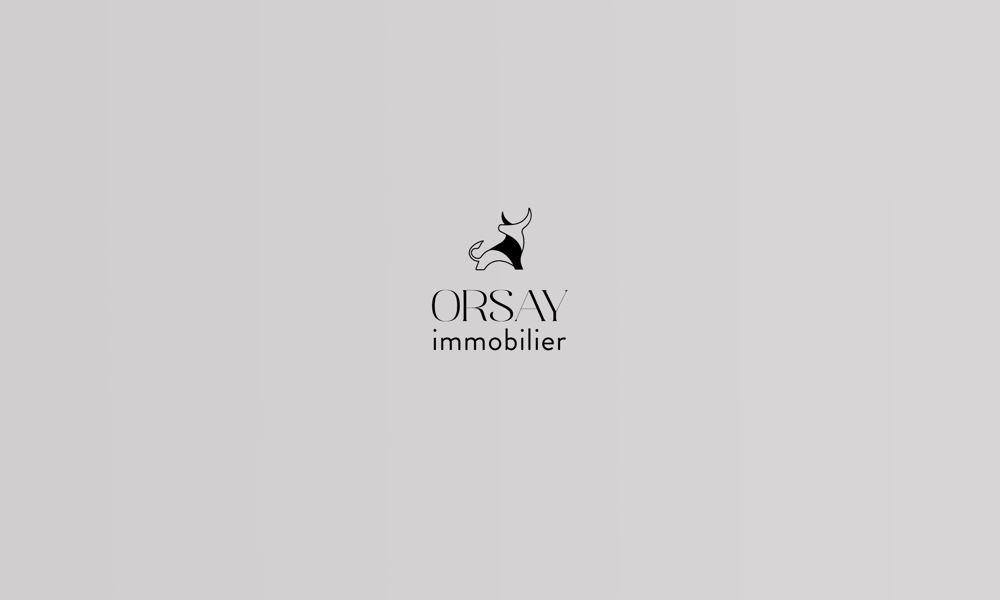
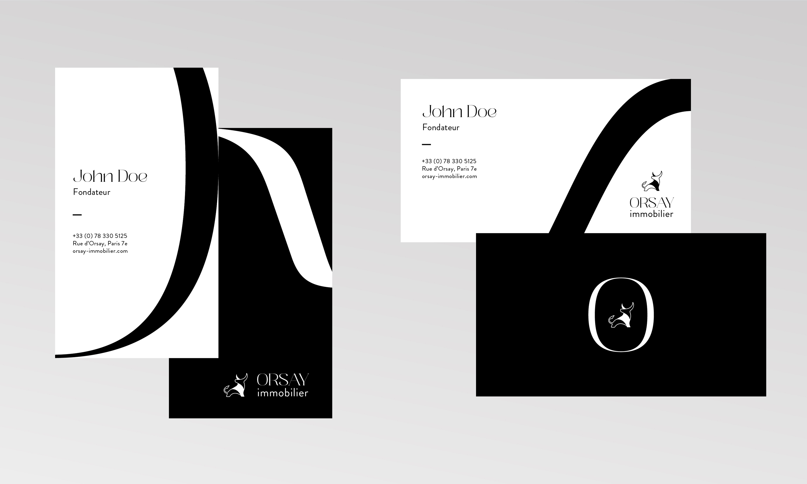

Orsay Immobilier
Identité Visuelle
30 ans d'expérience cumulée
Orsay Immobilier est une agence immobilière installée près du Quai d'Orsay à Paris, dans la rue du nouveau musée Gainsbourg. Ils proposent une expérience clés en mains, une véritable assistance à chaque étape, des conseils et une disponibilité pour un meilleur accompagnement dans le cadre d'un projet immobilier. L'objectif de l'agence est de créer son propre réseau afin de concurrencer des groupes comme ORPI ou FONCIA en région parisienne.
Plusieurs propositions
Afin de répondre à leur besoin, j'ai proposé différents logos. Trois furent refusés : un représentait la fenêtre d'un appartement parisien avec la lettre "O" d'Orsay, un autre possédait deux clés comme symbole de liberté et d'indépendance, et un dernier dévoilait le signe astrologique du Taurus pour la confiance et la qualité. À mon (grand) regret, le client préféra choisir une illustration minimaliste de taureau qu'il trouva sur une banque d'icônes ... À partir de ce dernier, j'ai dû produire des cartes de visite et templates Powerpoint tout en gardant le style élégant (formes basées sur les courbes d'une typo Serif) que j'avais exploré dans mes autres propositions.
Année
Septembre 2022
Read in English 🇬🇧